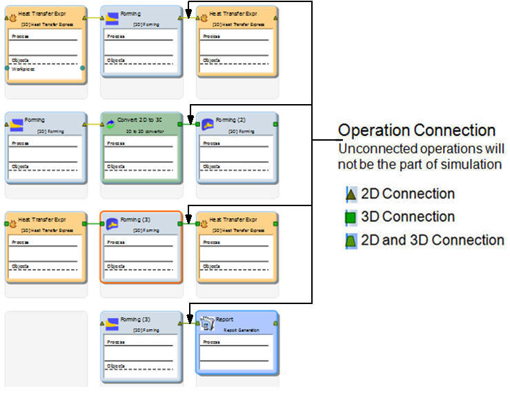
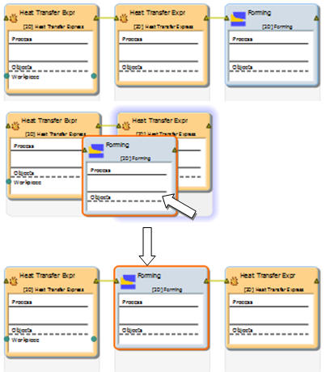
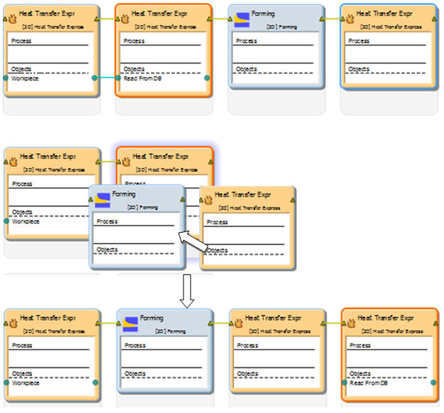
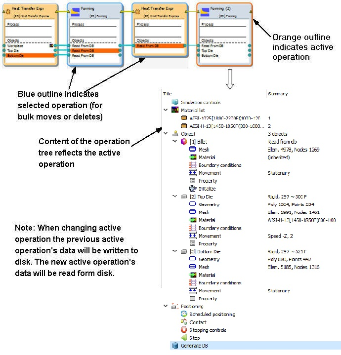
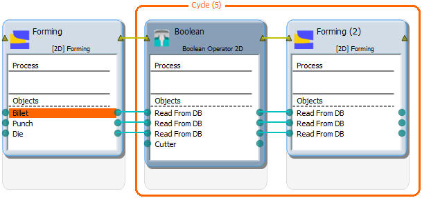

When user adds operations from explorer, they are automatically connected by connectors in the operation editor. Not all operations can be connected, 2D operations can only be connected to 2D operations and 2D to 3D convertor operator. Similarly 3D operations can only be connect to 3D operations. A few operations can connect to both 2D and 3D operations like Report generation, Die Stress study, DOE study and Optimization study operations. All these connections are differentiated by different type of connections as shown in below Fig. 6.6.1.1.

Different types of Operation connections
Simulation operators cannot be added as these operators are used to perform operations like boolean and cycling over the previous operation.
If the operations are not added in required sequence then operations can be reordered by dragging and dropping them at required position in the operation editor as shown in Fig. 6.6.1.2. and Fig. 6.6.1.3.

Reordering the single operation in operation editor

Reordering the two selected operations in operation editor
User needs to setup the operations sequentially as displayed in the operation editor by using operation tree or property editor. Orange outline around the operation indicates active operation and operation tree reflects contents of the active
operation. Blue outline also indicates selected operations for bulk moves or deletes as shown in Fig. 6.6.1.4.

Operations selection
In operation editor, options are provided to transfer required object data across operations. By right clicking on the object in any particular operation will give the options to pass the object to the next operation or to pass the object to all operations as shown in Fig. 6.6.1.1.5a. Object can only be passed to next operation or to all operations but cannot be passed to other operations randomly. User can notice an extra link between the passed objects across operations whenever the object is passed.
Pass Object To Next Operation: Using this option object data can be transferred to the next operation. (See Fig. 6.6.1.5.)
(a)

(b)
Pass object to next operation option; (a) Before passing and (b) After passing
Pass Object To All Operations: Using this option object data can be transferred to all operations. (See Fig. 6.6.1.6.)

(a)

(b)
Pass object to all operation option; (a) Before passing and (b) After passing
In few operations total number of objects is limited like in Heat transfer express operations for Heating and transfer heating type, where only one object is allowed, hence user has to take a note of these factors while passing the objects across
operations.
If user needs to perform boolean operation after forming operation and then continue with other forming operations using same old dies then even the die objects which are not necessary in boolean operation must also be passed to boolean operation first, because as these dies required for the next forming operation. So after passing the required die objects to boolean operation and selecting the boolean operation will add one cutter object, then user can pass the die objects billet to the next forming operation to use after Boolean operation.
In extrusion we can use add cycles to increase the computational efficiency by removing the material outside the area of interest in each cycle as an example for this situation as shown in Fig. 6.6.1.7.

Passing objects across boolean operation
Related Topics:
6.1. Integrated Manufacturing Porcess (MO) Pre-processor Layout